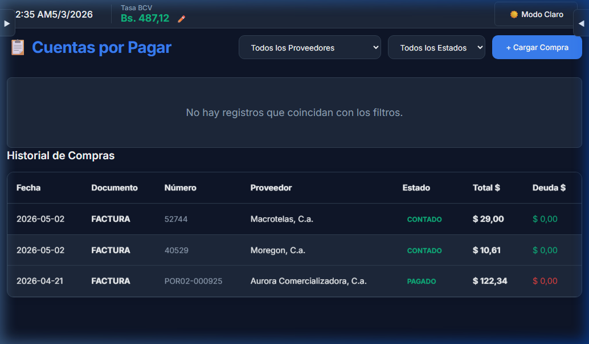
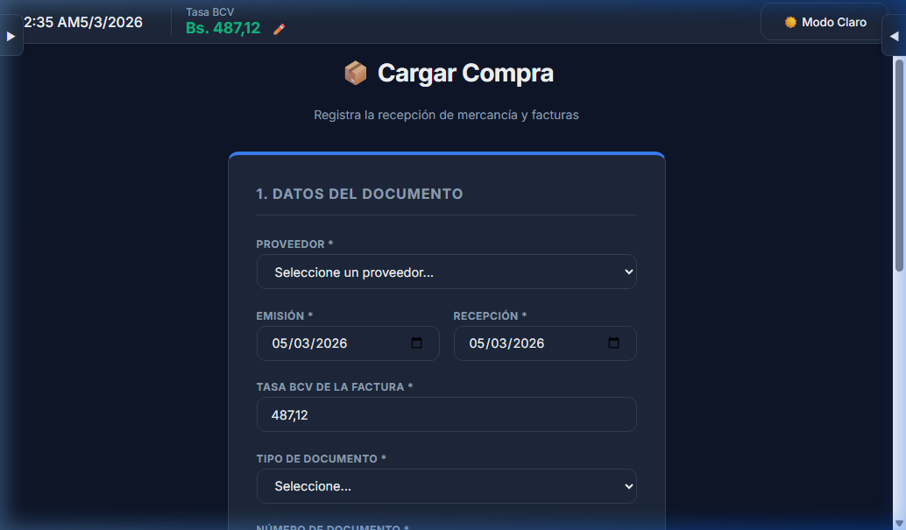
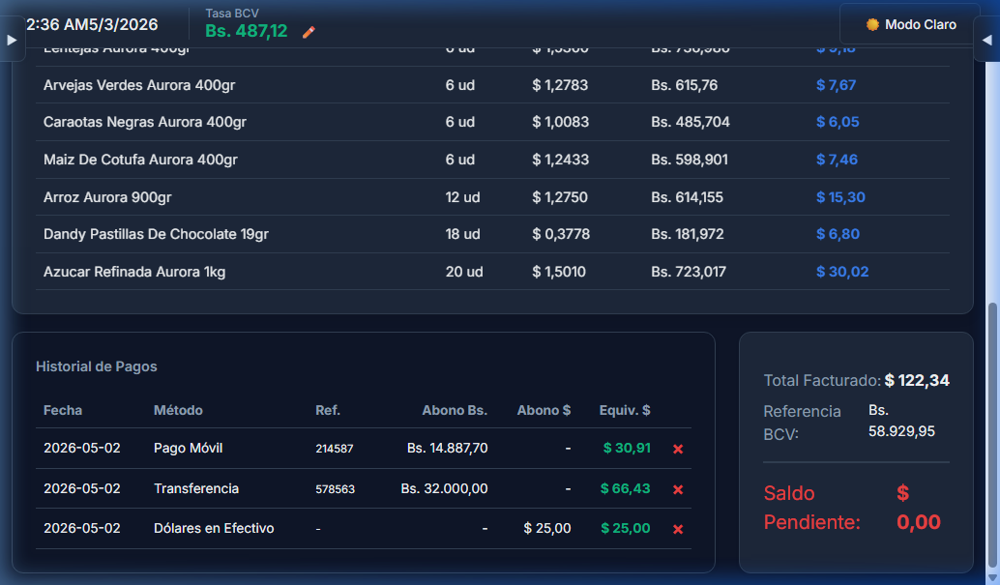
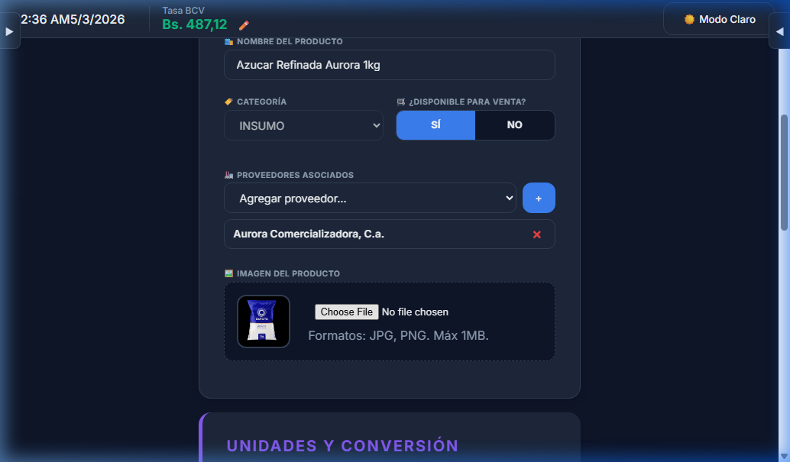

Este manual detalla el funcionamiento del módulo de Compras (Cuentas por Pagar). Este módulo permite registrar la recepción de mercancía, gestionar deudas con proveedores, realizar abonos granulares y mantener un historial auditivo de cada transacción financiera.
1. Dashboard de Cuentas por Pagar
Al ingresar al módulo, verá una vista general diseñada para el control rápido de deudas.

Tarjetas de Resumen
Visibilidad Inteligente: Solo se muestran tarjetas de proveedores con deudas activas (Estado: CRÉDITO o ABONO).
Métricas: Cada tarjeta muestra el nombre del proveedor, el monto total adeudado en dólares ($) y la cantidad de facturas pendientes.
Sistema de Filtros
Para manejar grandes volúmenes de datos, utilice los filtros ubicados en la parte superior derecha (Proveedor y Estado).
2. Registro de una Nueva Compra
Para cargar una factura o nota de entrega de un proveedor, haga clic en el botón + Cargar Compra.

1
Datos del Documento: Seleccione el proveedor, las fechas de emisión/recepción y, muy importante, la Tasa BCV del día de la factura. El sistema usará esta tasa para todos los cálculos de conversión.
2
Selección de Productos: Haga clic en "Seleccionar Productos". El sistema le mostrará solo los productos asociados a ese proveedor.
3
Estado y Pago Inicial: Registre si la compra es a crédito, de contado o si incluye un abono inicial.
IMPORTANTE: Para pagos electrónicos, el sistema exige obligatoriamente un Número de Referencia para garantizar la trazabilidad contable.
3. Gestión de Pagos y Abonos
Orange App permite realizar múltiples pagos a una misma factura hasta saldar la deuda.

Historial Detallado
Dentro del detalle de cada compra, encontrará una tabla con el historial de pagos:
Abono Bs. / Abono $: Monto pagado en la moneda original.
Equivalente $: El valor del pago convertido a dólares según la tasa de la factura.
Reversión de Pagos
Si cometió un error, puede eliminar un pago haciendo clic en la "×" roja. El sistema restaurará automáticamente el saldo pendiente y la deuda del proveedor.
4. Configuración Multi-Proveedor
Ahora puede asociar un mismo producto a varios proveedores distintos desde la ficha del producto.

Vaya al módulo de Productos y seleccione un producto.
En la sección "PROVEEDORES ASOCIADOS", seleccione los proveedores y agréguelos.
Guarde los cambios para que el producto esté disponible en las compras de todos esos proveedores.
CONSEJO: Mantener los proveedores actualizados en cada producto le permitirá realizar cargas de compra mucho más rápidas y sin errores de catálogo.